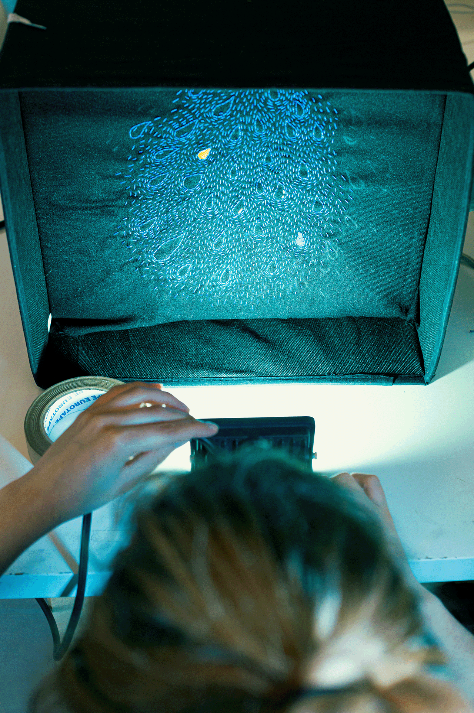
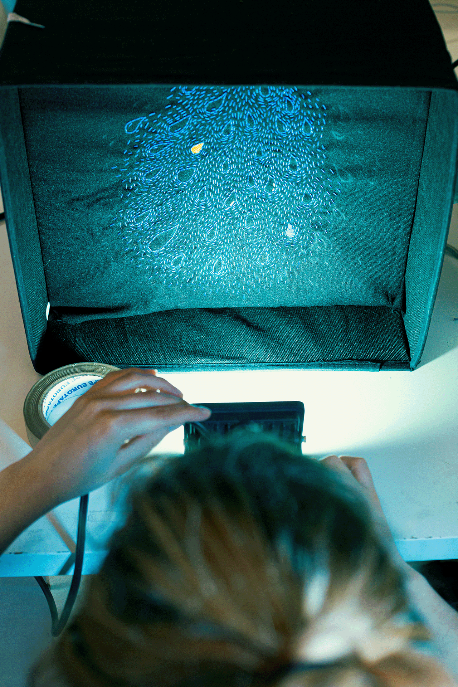

TOQUE
Curta-metragem de animação experimental, a partir de um conjunto de ilustrações, em bordado, que exploram o conceito de sensação e estímulo, através de representações visuais abstratas.
Aliado à relação do bordado com a história da opressão da mulher, estas ilustrações abordam o tema da intimidade da exploração da mulher cis-género com o próprio corpo, estimulando-o até alcançar o orgasmo. O projeto procura desmistificar o tema da masturbação “feminina” enquanto tabu, aproveitando e subvertendo o próprio bordado enquanto técnica “feminina”.
As ilustrações servem de base para uma curta-metragem de animação através de stop-motion e recortes digitais, inspirada em cineastas como Stan Brakhage e Norman McLaren, não só pelas cores, mas pelas técnicas de abstração e de aproximação sensorial.

 
